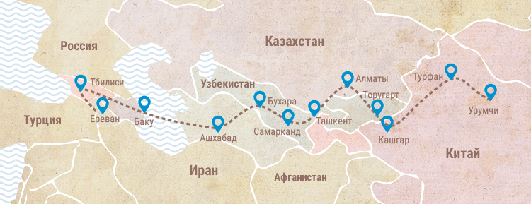
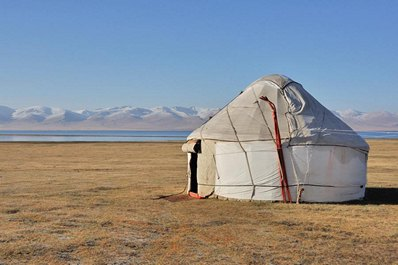
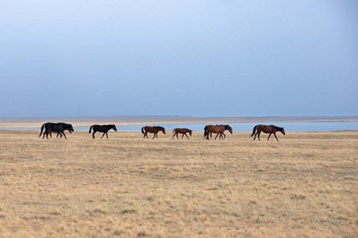
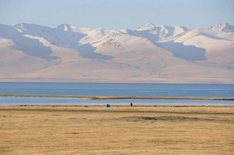
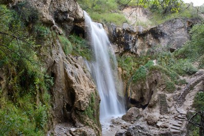
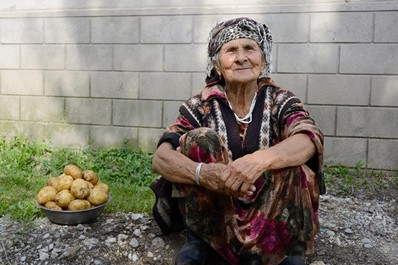
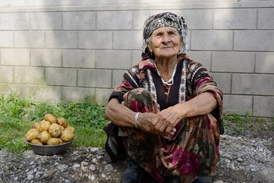
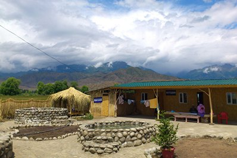
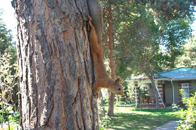
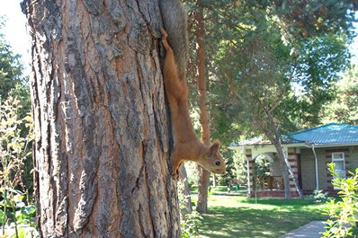

История Кыргызстана отражена в сохранившихся памятниках и достопримечательностях: от петроглифов в Чолпон-Ате и руин караван-сарая в Таш-Рабате до гигантской статуи Ленина, которая предстанет перед вами в городе Ош. На протяжении всего путешествия вы будете пробовать блюда местной кухни, которая существенно отличается на севере и юге страны. Перемещаясь по Киргизии, вы сможете каждый день радовать себя новыми вкусами блюд и напитков. Кыргызстан настолько многогранен, что трудно будет охватить все, чем богата эта страна в одном путешествии. Мы предлагаем вам подумать, какой вид досуга вам более интересен, и выбирать места для посещения сообразно вашим предпочтениям. Так вы сможете наиболее детально и структурированно составить маршрут путешествия по Кыргызстану
Великий Шелковый путь… Что мы о нем знаем? Воображение сразу же рисует бескрайнее песчаное море знойной пустыни. Рассекая барханы, словно волны, бредут по ней нескончаемые караваны, нагруженные богатыми товарами… Но, это только лишь часть истории. Великий Шелковый путь протянулся на тысячи километров, ведя караваны и по палящим пустыням, и по живописным оазисам, и по горным перевалам. На протяжении пути возникали, расцветали и опустошались города и целые цивилизации. Немало разрушительных войн, пожарищ, голода и мора видели древние города, расположенные вдоль Шелкового пути. Веками шумели разноязычные восточные базары, сотни лет по пыльным караванным дорогам везли купцы для продажи европейцам драгоценные шелка и каменья, пряности и красители, золото и серебро, экзотичных птиц и зверей. Великий Шелковый путь – грандиозный торговый маршрут, соединивший Восток и Запад и ставший причиной возникновения множества уникальных городов, исторических памятников, обычаев и даже государств. Как же возник этот удивительный маршрут, ставший впоследствии источником культурного обогащения Запада и Востока? Обратимся к увлекательной истории Шелкового пути.

Сон-Куль – одно из самых известных высокогорных озер в Кыргызстане. Оно находится на высоте 3016 м. (9895 футов) над уровнем моря. Сон-Куль - это удивительной голубизны озеро, окруженное широкими плодородными лугами, на которых кочевые племена векамипасли животных. Добраться до озера Сон-Куль можно только летом (примерно с июня до начала сентября), так как в остальное время снег и лед блокируют дорогу. Путешественники, которые хотят познакомиться с традиционной кочевой культурой могут жить в юртовых лагерях, и совершать конные прогулки и походы в горы. Дорога до Сон-Куля, расположена примерно в 100 км (60 милях) от Кочкора и в 300 км (190 милях) от Бишкека. Большая ее часть асфальтирована, некоторые участки покрыты гравием. Продолжительность пути 6-7 часов. Зимой температура на озере Сон-Куль может достигать -20 °C (-4 ° F), а снег лежит примерно 200 дней в году. В холодную и долгую зиму пастухи укрываются в близлежащих селениях, таких как Кочкор, Ат-Баши и Нарын, где есть более защищенные места для стада.Таким образом, зимой вокруг Сон-Куля никто не живет, а само озеро практически недоступно. Весной, после полного таяния льда на Сон-Куле, пастухи и их стада возвращаются обратно на «жайлоо» - широкиебогатые пастбища вокруг озера. Вблизи Сон-Куля нет строений, только юрты, которые на зиму сворачиваются, то есть уклад жизни здесь остался неизменным.
  Летом, около озера Сон-Куль, по-прежнему прохладно. Средняя температура составляет всего 11 ° C (52 ° F), а ночью опускается ниже нуля. Юрты оснащены небольшими печами, которые согревают путешественников ночью, на «жайлоо» нет электричества и водопровода. Это делает Сон-Куль прекрасным местом для экстрималов и желающих попробовать жизнь кочевников, отгородиться от внешнего мира и насладиться природой невероятной красоты и чистоты. Юрты застелены толстыми матрасами и одеялами(но в них не найти кроватей западного образца). Недалеко от юртовых лагерей есть туалеты на открытом воздухе. Некоторые юртовые лагеря специально организованы для посетителей, а часть лагерей – для местных пастухов, которые живут на Сон-Куле. Местные жители дружелюбны и приветливы, но лучше заранее согласовать свое посещение, чтобы у вас было, где остановиться и поесть. Территория вокруг Сон-Куля представляет собой богатую экосистему с водно-болотными угодьями и горами, расположенными близко друг к другу. На высоких равнинах вокруг озера нет деревьев. Местность полна бескрайними лугами, травы и растения которых используются в лечебных целях. Вокруг Сон-Куля обитает множество птиц, в том числе соколы и беркуты, а в горах - олени, лисы, бараны Марко Поло, леопарды и волки (хотя эти животные, как правило, держатся высоко в горах, далеко от людей). Отдых у озера Сон-Куль, походы, конные прогулки по близлежащим горам, юртовые лагеря на берегу озера – являются популярным времяпровождением в Кыргызстане.

Чем заняться в Арсланбобе – туры и достопримечательности Обширные территории фруктовых и ореховых лесов в долине реки Арсланбоб - самые крупные в мире, их площадь достигает более 600 000 гектаров. Каждый год в Арсланбобе собирают до 1500 тонн урожая орехов, а также 5000 тонн яблок, фисташек и алычи. Уже в течение многих лет Арсланбоб, что в переводе с киргизского означает "король лесов", является национальным заповедником. Орехи из этой области транспортировались по разным уголкам света во время расцвета Великого Шелкового пути. Срок жизни ореховых деревьев может превышать тысячи лет, их ветви образуют обширную крону, а высота таких деревьев достигает 30 метров. Обычно ореховые деревья произрастают на горных склонах и вдоль берегов рек на высоте от 1000 до 1800 метров над уровнем моря - сам Арсланбоб находится на высоте 1700 метров над уровнем моря. Помимо богатых питательными веществами грецких орехов, ценится древесина орешины, которая используется для изготовления мебели.
 

Существует множество легенд о том, как появились ореховые леса Арсланбоба. Одна из них гласит, что Александр Македонский однажды привел свои войска на эти земли, возвращаясь из своего похода на Восток. Покидая этот удивительный край, он взял с собой в Грецию фрукты и орехи из местных лесов. Так киргизские орехи попали в Грецию, а позже распространились по всему миру и стали известны под названием «грецкие». Другая легенда повествует о том, что Арсланбобом звали героя, который в 11 веке принял смерть недалеко от лесов после того, как был предан своей женой. Говорят, что на том самом месте до сих пор можно увидеть отпечатки его рук и ног, а также следы крови. Существует еще одна версия, повествующая о скромном и трудолюбивом Человеке, которому Пророк Мухаммед поручил найти самое красивое и удобное место для рая на земле. Человек долго путешествовал в дальних краях, пока не наткнулся на живописную долину с пенящейся горной рекой, но в которой не было ни единого деревца. Об этом месте он поведал Пророку. Вдохновленный рассказом Человека о чудесной долине, Пророк отправил ему мешочек семян различных видов плодовых деревьев, в том числе, с семенами дерева грецкого ореха. Человек поднялся на вершину горы и развеял семена по всей долине, со временем превратившейся в огромный сад.
На Востоке об этих местах было известно издревле. Об озере писал китайский путешественник Чжан Цзянь, побывавший на Иссык-Куле в 128 году до н.э. во время своего путешествия в 138-126 гг до н.э. Упоминание об озере в письменных источниках другого китайского исследователя - Сюань Чжаня встречается в описании его 16-летней экспедиции. Название «Иси-Куль» впервые встречается в анонимном произведении «Границы мира с Востока на Запад», написанном на таджикском языке в 982 году нашей эры. В этой работе также упоминаются точные размеры озера.
 

Из Бишкека на озеро Иссык-Куль можно добраться через Бомское ущелье, либо сократить путь через долину Чон-Кемин. Озеро лежит на дне впадины и не имеет никакого оттока. Горы окольцовывают озеро, в его окрестностях лежит несколько долин, которые стоит посетить: это Григорьевка и Семеновка на севере, Барскоон на юге и долина вокруг Каракола. Горы Кунгей («Солнечный») Ала-Тоо испещрены треккинговыми маршрутами, в том числе теми, которые ведут от озера в сторону города Алматы, в то время как на юге лежат Тескей Ала-Тоо ("Темные горы"). Эти горные цепи защищают Иссык-Кульскую впадину от ледяных ветров и суховеев. Более того, долина представляет собой редкое сочетание уникального климата: морского, степного, горного и зоны вечных ледников. Да и само возникновение Иссык-Куля – до сих пор некая «геологическая загадка».